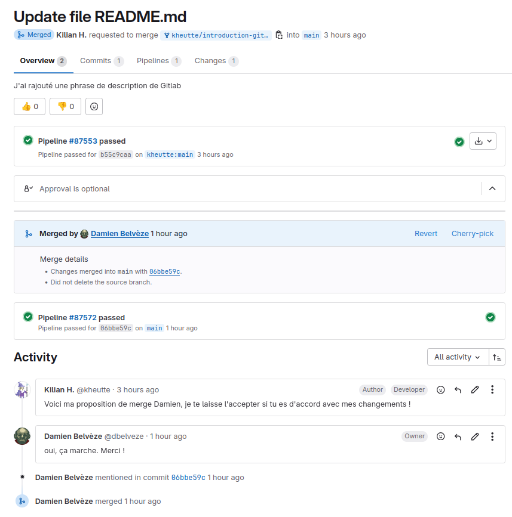

6. Proposer une amélioration à un code source ou à un texte
faire un fork
Les Apprenant.e.s se constituent en binôme. Chaque membre du binôme va faire une copie, un du de l’autre. Le but est de faire des modifications à la liste d’ingrédients du binôme et de lui proposer ensuite ces changements.
Pour faire un d’un projet, suivre les instructions ci-dessous:
ou téléchargez-le fichier pour le lire dans votre propre visionneuse de PDF
Réponse faite à cette demande de fusion :
